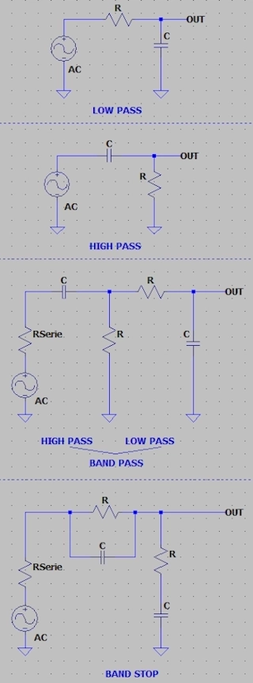

Compute the first order Passive RC Filter using the given formula.
Fill two of the three fields to compute de desired value, the frequency, the resistance or the capacitance.
Below are the arragement for acting as high-pass or low-pass frequency. Just the arrangement indicates it's an high-pass or low-pass.
| fc | Cut-off Frequency in hertz |
| C | Capacitance in farad |
| R | Resistance in ohm |
| fc | |
| R | |
| C | |
| f +3dB | |
| f -3dB | |
| ---| Cientific Notation |--- | ||||
| femto | pico | nano | micro | mili |
| e-15 | e-12 | e-9 | e-6 | e-3 |
| Kilo | Mega | Giga | Tera | Peta |
| e+3 | e+6 | e+9 | e+12 | e+15 |

References:
Wikipedia Low-pass filter Wikipedia High-pass filter